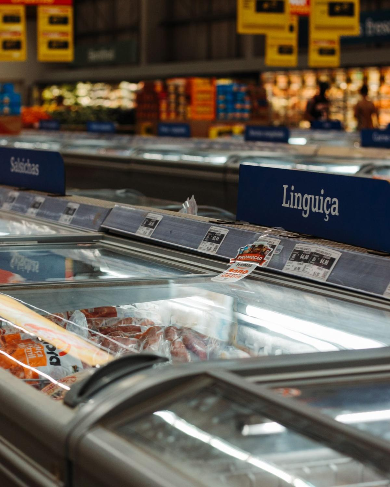

Un boucher ne stocke pas, il conserve un produit vivant. Deux degrés de trop et le ressuyage tourne mal ; un air trop sec et la carcasse perd du poids ; un air trop humide et les surfaces poissent. La chambre froide de boucherie est un outil de métier avant d'être un volume : voici les points qui comptent vraiment.

Chaque catégorie de viande a sa température maximale de conservation. Une chambre froide de boucherie doit tenir la plus contraignante d'entre elles, avec une marge de sécurité.
| Produit | Température maximale | Consigne conseillée | Point de vigilance |
|---|---|---|---|
| Viande fraîche de boucherie | +2 °C | 0 à +2 °C | Ne jamais empiler : l'air doit circuler entre les pièces |
| Viande hachée | +2 °C | 0 à +2 °C | Produit le plus sensible, DLC très courte, bac fermé et daté |
| Abats | +3 °C | 0 à +2 °C | Bacs étanches dédiés, écoulement des exsudats |
| Volailles et gibier | +4 °C | +1 à +3 °C | Zone séparée : risque de contamination croisée élevé |
| Charcuterie, produits cuits | +4 °C | +2 à +4 °C | Jamais dans la même enceinte que le cru non conditionné |
En pratique, la plupart des boucheries de quartier règlent leur chambre principale entre 0 et +2 °C : cette consigne couvre l'ensemble des familles crues. La difficulté n'est pas d'atteindre la température, mais de la tenir malgré les ouvertures de porte du matin. Un rideau à lanières et un groupe correctement dimensionné valent mieux qu'un thermostat baissé à -1 °C, qui gèle les pièces en surface. Les plages réglementaires complètes figurent sur notre page normes et HACCP.
Dès que vous recevez des quartiers ou des carcasses, le rail devient indispensable : il suspend sans contact entre pièces, favorise le ressuyage et libère le sol pour le nettoyage. Attention, le rail se fixe sur une structure porteuse dimensionnée pour la charge — un point à annoncer au frigoriste dès le devis, pas au moment de la pose.
C'est le paramètre que les chambres froides généralistes ignorent. Trop sec, la viande croûte et perd du poids : c'est de la marge qui s'évapore littéralement. Trop humide, les surfaces poissent et les moisissures s'installent. Un évaporateur à grande surface avec faible écart de température, associé à un hygrostat, donne un air froid sans être desséchant.
Le cru non conditionné et les produits cuits ou prêts à consommer ne doivent jamais se croiser. Deux enceintes distinctes restent la solution la plus lisible ; à défaut, zone dédiée, étagères réservées, bacs fermés et prêt-à-consommer rangé systématiquement au-dessus du cru, jamais l'inverse.
Ajoutez à cela un sol antidérapant avec siphon, un éclairage étanche qui restitue correctement les couleurs de la viande, et des rayonnages en matériau alimentaire démontables sans outil pour le nettoyage hebdomadaire. Si votre laboratoire est étroit ou compte un poteau porteur, une chambre froide sur mesure en panneaux modulaires s'ajuste au centimètre près.
Dans les heures qui suivent la réception, la pièce doit stabiliser sa température à cœur. Air froid mais mouvement doux : un flux violent dessèche la surface.
7 à 14 jours entre 0 et +2 °C, en chambre classique bien régulée. Suffisant pour attendrir une entrecôte ou un faux-filet sans enceinte dédiée.
Au-delà de 21 jours, il faut une enceinte séparée : hygrométrie tenue à 75-85 %, ventilation permanente et douce, aucun autre produit dans l'enceinte.
Relevés quotidiens de température et d'hygrométrie, traçabilité des lots, croûtage parage documenté. C'est le dossier qui rassure au contrôle.
Le point souvent sous-estimé : une chambre de maturation ne peut pas partager son air avec vos abats ou votre charcuterie. Les transferts d'odeurs sont immédiats et irréversibles sur une pièce affinée pendant six semaines. Si vous vous lancez, prévoyez le budget d'une seconde enceinte plutôt que de cloisonner une chambre existante.
Une boucherie de quartier avec réception de quartiers travaille généralement sur 6 à 12 m³ en positif, plus une réserve négative pour les stocks. Voici les fourchettes matériel, hors pose.
| Configuration | Usage boucherie | Matériel (HT) | Pose (en sus) |
|---|---|---|---|
| Positive compacte 4 à 6 m³ | Petite boucherie, découpe seule | 2 500 à 4 000 € | +15 à 30 % |
| Positive standard 6 à 12 m³ | Quartiers suspendus + découpe | 3 500 à 6 500 € | +15 à 30 % |
| Négative compacte | Stock congelé, gibier de saison | 5 000 à 8 000 € | +15 à 30 % |
| Négative standard | Gros volumes, production charcutière | 7 000 à 12 000 € | +15 à 30 % |
Les équipements propres au métier — rail et chariots, crochets inox, hygrostat, sol antidérapant, alarme de température — ajoutent quelques centaines d'euros mais évitent des pertes bien plus lourdes. Prévoyez également 200 à 500 € par an de contrat d'entretien : nettoyage du condenseur, contrôle d'étanchéité, vérification des sondes. Pour la vue d'ensemble du budget, consultez le guide des prix chambre froide 2026 ; pour dimensionner selon vos kilos réceptionnés chaque semaine, voyez quelle taille de chambre froide choisir.
Rails, hygrométrie, séparation cru/cuit : décrivez votre labo en 2 minutes, un spécialiste du froid commercial de votre région vous rappelle avec un devis précis. Gratuit, sans engagement.